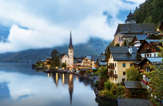
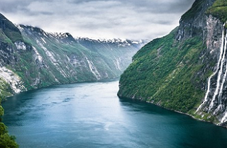
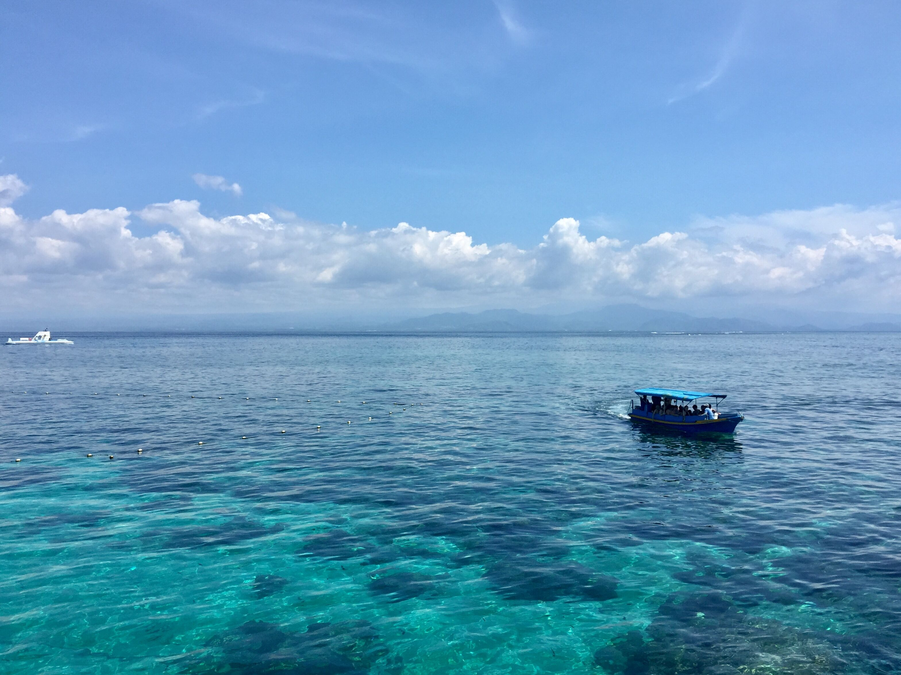

毛里求斯
2016-07-02
———
非洲毛里求斯体验阳光沙滩海浪和当地风情;享受小公主般待遇的印度宫廷风SPA、充满东南亚风情的林间SPA、和听起来十分狂野的非洲风SPA，每一样都有不同龄的感受，每一种都让我们一洗疲惫，全身心的投入到度假和美景中，整个人都慢了下来...




巴厘岛
2017-02-01
———
在海神庙对岸的小亭眺望日落景色，时间慢慢流逝；在圣泉庙沐浴的地方供求取健康和财富，庙里的泉水由水池里出，石头圣龛上早是苔痕斑斑，而泉涌依然如当年；在乌鲁瓦图断崖品着下午茶、尝尝当地特色的点心，断崖、海洋尽收眼底，无限的瑕意；在金巴兰海滩村民们反而用他们特有的热情和朴实使得整个海滩极具亲和力,这里傍晚看着落日，听着歌手们演唱各国歌谣，享用烛光晚餐、海鲜烧烤...
美娜多
2017-02-15
———
在海豚湾追逐海豚，感受大自然的魅力，和海豚亲密接触，净化心灵；去火山口体会大自然的力量，在耶稣雕塑前收获信仰；在蓝梦岛浮潜，周围环绕珊瑚礁，五颜六色;去遮浪岩岛，红海湾和碣石湾交接处突伸入海里，东边波涛浪啸，万马奔腾，西边风平浪静，如潭可印月。这座岛屿让我流连忘返...
日本
2018-02-01
———
漫步在小樽的街头，感受运河旁的点点星光，体会《情书》里的悸动和白雪皑皑带来的宁静;在大通公园的草坪上，踩下一个又一个雪白的脚印，和旁边的还同意其晒太阳，捉迷藏；在路边的街道随意进入一家拉面馆，品尝牛肉拉面，喝汤咖喱。北海道无论是白的简洁的，还是色彩丰富的店铺，都展现出它可爱的一面...